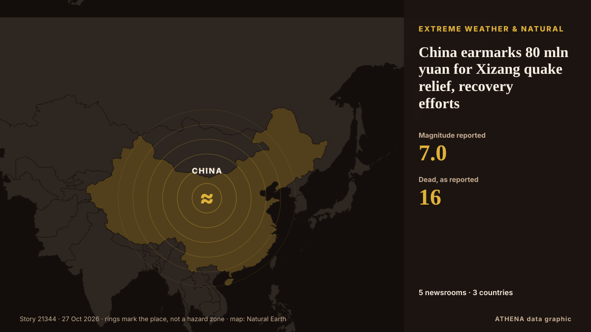

China earmarks 80 mln yuan for Xizang quake relief, recovery efforts

16 killed after M7.0 quake hits China's Xizang, rescue underway. из CGTN (China)
Независимые источники: 5 изданий в 3 странах, с 22 окт.; первым сообщил Xinhua (English) — page reader; освещение затихло. ATHENA оценивает риск как повышенный (5.5/10), прежде всего из-за тяжести описываемого ущерба и географического и отраслевого охвата. Уверенность — 66 % (высокая); подтверждают независимые источники: 5 изданий, средняя надёжность источников — 73 %. СМИ по странам: Китай (36), Пакистан (2), Иран (2). Освещение: с 22 окт. по 27 окт., 103 ч.
Почему это важно: События в энергетике и сырьевой сфере влияют на цены топлива и электроэнергии, надёжность поставок и климатические обязательства.
Что изменилось: 1 новое сообщение за 24 часа до 27 окт..
Первый заголовок: Rescue efforts continue after 7.0-magnitude quake in China's Xizang
Заголовки приводятся на английском языке, как они были опубликованы.
Коротко в цифрах
Отобрано, оценено и написано по опубликованной методологии ATHENA. Ни один редактор не вмешивается в отдельные события. Как это создаётся ›
| 22 Oct 19:54 UTC | 3 |
|---|---|
| 23 Oct 01:54 UTC | 14 |
| 23 Oct 07:54 UTC | 10 |
| 23 Oct 13:54 UTC | 2 |
| 23 Oct 19:54 UTC | 0 |
| 24 Oct 01:54 UTC | 4 |
| 24 Oct 07:54 UTC | 2 |
| 24 Oct 13:54 UTC | 0 |
| 24 Oct 19:54 UTC | 1 |
| 25 Oct 01:54 UTC | 0 |
| 25 Oct 07:54 UTC | 2 |
| 25 Oct 13:54 UTC | 0 |
| 25 Oct 19:54 UTC | 1 |
| 26 Oct 01:54 UTC | 0 |
| 26 Oct 07:54 UTC | 0 |
| 26 Oct 13:54 UTC | 0 |
| 26 Oct 19:54 UTC | 0 |
| 27 Oct 01:54 UTC | 1 |
| 23 Oct 06:40 UTC | 3.6 |
|---|---|
| 23 Oct 06:41 UTC | 4.9 |
| 23 Oct 12:28 UTC | 5.4 |
| 23 Oct 17:23 UTC | 5.1 |
| 24 Oct 04:40 UTC | 5.8 |
| 28 Oct 16:42 UTC | 5.1 |
| 28 Oct 16:42 UTC | 5.5 |
Откуда эти цифры
Значимость
Риск
Уверенность
Освещение — кто сообщил и когда
заголовок в оригинале · открывает источник- Xinhua (English) — page reader · КитайCasualties reported after 7.0-magnitude quake hits China's Xizang
- CGTN (China) · Китай16 killed after M7.0 quake hits China's Xizang, rescue underway
- CGTN (China) · КитайRescue efforts underway after M7.0 quake hits southwest China's Xizang
- CGTN (China) · КитайXi orders all-out rescue efforts after M7.0 earthquake in Xizang
- APP (Associated Press of Pakistan) · ПакистанPM grieved over deaths, injuries by earthquake in China’s Xizang region
- APP (Associated Press of Pakistan) · ПакистанPresident Zardari condoles loss of lives in China’s Xizang region earthquake
- CGTN (China) · Китай16 killed, 65 injured after M7.0 quake hits China's Xizang
- CGTN (China) · КитайChina allocates 30 mln yuan for post-disaster work in Xizang
- Xinhua (English) — page reader · КитайXi orders all-out rescue efforts after 7.0-magnitude earthquake in Xizang
- Xinhua (English) — page reader · КитайChina earmarks 80 mln yuan for Xizang quake relief, recovery efforts
- Xinhua (English) — page reader · КитайRescue teams dispatched after 7.0-magnitude quake hits China's Xizang
- Xinhua (English) — page reader · КитайFirefighters make door-to-door rescue efforts in China's quake-hit Xizang
- Xinhua (English) — page reader · КитайAerial footage of quake epicenter in China's Xizang
- Xinhua (English) — page reader · Китай16 killed, 65 injured after 7.0-magnitude quake hits China's Xizang
- Xinhua (English) — page reader · КитайChina upgrades emergency response to Level III after Xizang quake
- CGTN (China) · Китай16 killed, 76 injured after M7.0 earthquake hits China's Xizang
- Xinhua (English) — page reader · Китай16 killed, 76 injured after 7.0-magnitude quake hits China's Xizang
- Xinhua (English) — page reader · КитайFirefighters cook hot meals after quake in China's Xizang
- Xinhua (English) — page reader · Китай16 dead, 76 injured after 7.0-magnitude quake hits China's Xizang
- Xinhua (English) — page reader · Китай7.0-magnitude Xizang quake an extensional fracture: expert
- Xinhua (English) — page reader · КитайChina deploys satellites, UAVs for Xizang quake relief
- CGTN (China) · КитайXizang, Where the Earth Opens Up | Talk Xizang
- Xinhua (English) — page reader · КитайChina earmarks 80 mln yuan for Xizang quake relief, recovery efforts
- Xinhua (English) — page reader · Китай16 dead after 7.0-magnitude quake hits China's Xizang
- Xinhua (English) — page reader · КитайChina earmarks 80 mln yuan for Xizang quake relief, recovery efforts
- CGTN (China) · КитайStretched, not squeezed: Why the Xizang quake was a 'pull-apart'
- CGTN (China) · КитайChina deploys satellites and drones to Xizang quake zone
- CGTN (China) · КитайChina earmarks 80 mln yuan for Xizang quake relief and recovery
- Xinhua (English) — page reader · КитайChina Focus: Rescue efforts intensify after Xizang quake kills 16, injures 76
- Xinhua (English) — page reader · КитайRescue efforts intensify after Xizang quake kills 16, injures 76
- Mehr News (English) · ИранChina earmarks 80 mln yuan for Xizang quake relief
- Mehr News (English) · ИранXi orders all-out rescue efforts after 7.0-magnitude quake
- CGTN (China) · КитайOver 5,000 rescuers deployed after M7.0 earthquake hit China's Xizang
- Xinhua (English) — page reader · КитайRescue efforts continue after 7.0-magnitude quake in China's Xizang
- CGTN (China) · КитайRescue efforts continue after M7.0 quake in China's Xizang
- Xinhua (English) — page reader · КитайRescue efforts continue after 7.0-magnitude quake in China's Xizang
- Xinhua (English) — page reader · КитайFirst after-quake baby born in Baqen, China's Xizang
- Xinhua (English) — page reader · Китай5.7-magnitude quake hits SW China's Xizang: CENC
- CGTN (China) · КитайHealth, emergency services back post-quake resettlement in Xizang
- Xinhua (English) — page reader · КитайDisplaced residents moving into prefab homes three days after Xizang quake